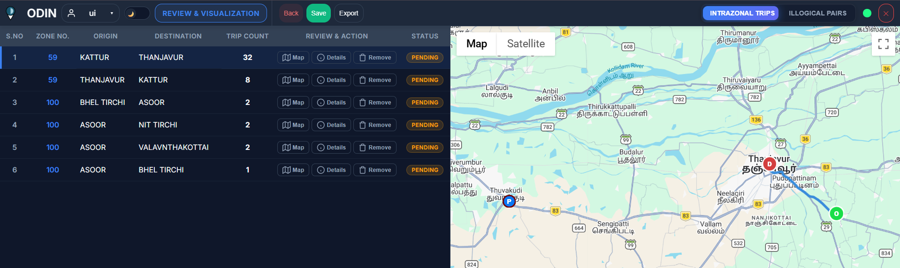
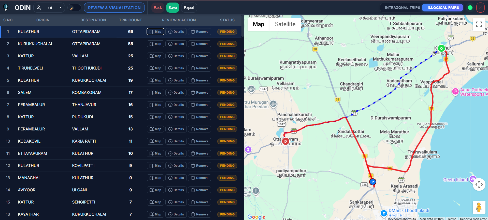

From Side Project to
Industry Standard
ODIN evolved through relentless iteration — each phase solving a deeper problem in transportation data validation.
Excel based Analysis
It began as a personal fix for a professional bottleneck — manually coding thousands of survey place-names into administrative zones through a collection of Python scripts
Intelligent Matching
The scripts grew into a cohesive engine. Algorithms to suggest Place names were introduced to handle the chaos of raw, hand-written survey data — resolving thousands of entries with intelligent suggestions.
ODIN v2.5.3
Today, ODIN is a full-scale validation platform with a FastAPI backend, interactive map-based UI, real-time auto-save, and a powerful Review & Visualization module. It doesn't just process data — it interprets spatial logic.
Zone Assign Mode
The heart of ODIN. Resolve survey place-names to administrative zones with intelligent spatial suggestions, phonetic matching, and interactive map-based selection.
PIP Lookups
Automated Point-in-Polygon against local Shapefiles
Suggestions
Double Metaphone + phonetic scoring for noisy data
Auto-Save
File System Access API — real-time disk sync
Review & Visualization
Deep spatial insights that flag inconsistencies before they impact your final report. Detect, visualize, and resolve — all in one interface.

Same-Zone Detection
Automatically flags trips where Origin and Destination fall within the same administrative zone. Each trip is mapped with color-coded markers — Origin (Green), Destination (Red), and Survey Plaza (Blue) — for instant spatial context.

Spatial Logic Validation
Compares the direct Origin→Destination route (blue) against the Origin→Survey→Destination path (red). If the detour is unreasonable, the pair is flagged as illogical — with full vehicle breakdown and distance metrics.
Upcoming Features
The next evolution of ODIN's analytical capabilities — transforming raw validation into actionable intelligence.
OD Matrix Generation
Automated Origin-Destination matrices with zonal aggregation and vehicle-class segmentation.
In DevelopmentDesire Line Diagrams
Visual flow maps connecting origins to destinations with weighted line thickness representing trip volume.
PlannedTrip Length Frequency
Distribution analysis of trip distances — histograms and cumulative frequency curves for spatial pattern recognition.
PlannedCommodity Analysis
Cross-tabulation of commodity codes with OD pairs. Abstract and detailed commodity breakdowns per route.
PlannedExport Reports
One-click generation of formatted Excel and PDF reports with charts, maps, and summary statistics.
PlannedBase Number Estimations
Statistical expansion of survey sample data to estimate base-year traffic volumes using AADT and seasonal correction factors.
PlannedThe Stack
Performance-first technologies. Zero-latency workflows. Fully offline-capable.